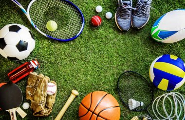

自分の好きなもの
スポーツ

スポーツと一言で言っても、全部を思い出せないくらいの数スポーツがある。
ここでは、多種多様なスポーツの中から私が行っているスポーツについて紹介していきたいと思う。
サッカー
私は現在、週２～３日の頻度で友達とサッカーをしています。
私たちが行っているサッカーは通常の11vs11の人数でするのではなく6vs6くらいの人数で行うため
フットサルとサッカーの間くらいのイメージです。
バスケ
次に私たちが行っているバスケでは、基本的に1vs1をローテンションや2vs2のチーム戦といった、
少人数での試合が多いです。
そのため、体力の消耗が激しくなるので、久々の運動の時はケガしないよう慎重になります。